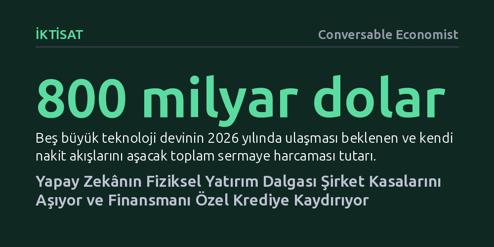

IKTISAT · Conversable Economist · 2026-10-23
Yapay zekâ devlerinin sermaye harcamaları 2026'da nakit akışlarını aşarak 800 milyar doların üzerine çıkmaya hazırlanıyor. Bu devasa altyapı inşası, şirketleri öz kaynakların ötesinde hızla büyüyen özel kredi fonlarına ve yeni finansal risklere yönlendiriyor.
Yapay zekânın sadece bir yazılım devrimi değil, şirket kasalarını aşarak küresel finansal sistemin dengelerini sınayan tarihin en büyük fiziksel sermaye yatırımlarından biri olduğunu gösteriyor.

Yapay zekâ etrafındaki küresel tartışmalar genellikle algoritmalar, modeller ve yazılım yetenekleri üzerinden yürüyor. Kamuoyundaki genel kaygı, yazılımın o kadar ucuz ve erişilebilir hale geleceği ve bu durumun kitlesel işsizliğe yol açacağı yönünde. Ancak madalyonun diğer yüzünde bambaşka ve çelişkili bir tablo var: Bu yazılımları çalıştıracak veri merkezleri, gelişmiş yarı iletken fabrikaları ve gereken devasa enerji santralleri inanılmaz derecede pahalı bir fiziksel yatırım gerektiriyor. Bir teknolojinin aynı anda hem son derece ucuz hem de olağanüstü pahalı olması iktisadi olarak mümkün değil.
İktisatçı Stijn Van Nieuwerburgh'ün Brookings için hazırladığı çalışma, yapay zekâyı soyut bir kod yığını olarak değil, tarihin en büyük fiziksel sermaye inşalarından biri olarak ele alıyor. Yapay zekânın geleceğini belirleyecek asıl dinamik, modellerin ne kadar zeki olduğundan ziyade, bu eşi benzeri görülmemiş fiziksel altyapının nasıl finanse edileceği sorusunda düğümleniyor.
Rakamlar bu dönüşümün boyutunu çarpıcı biçimde ortaya koyuyor. Sektörün lokomotifi konumundaki beş dev şirketin—Oracle, Microsoft, Amazon, Meta ve Alphabet—toplam sermaye harcamaları 2020 yılında yaklaşık 97 milyar dolar seviyesindeyken, 2025'te 400 milyar doları aştı ve 2026'da 800 milyar doların üzerine çıkması bekleniyor. Bu harcama temposu, geçmişteki demiryolu veya telekomünikasyon yatırımlarıyla kıyaslanabilecek tarihi bir eşiğe işaret ediyor.
Daha da önemlisi, 2026 projeksiyonlarına göre bu beş teknoloji devinin toplam sermaye harcamaları, tarihte ilk kez operasyonel nakit akışlarının toplamını geride bırakacak. Şirketlerin kendi ana faaliyetlerinden yarattığı muazzam nakit artık bu yatırım hızını tek başına finanse etmeye yetmiyor. Bu kırılma noktası, teknoloji devlerini ya dış kaynak bulmaya ya da varlık ve yükümlülükleri kendi bilançolarının dışına taşıyan yeni finansman modellerine mecbur bırakıyor.
Bilanço dışı arayışlar, veri merkezi geliştiricileri, gayrimenkul yatırım ortaklıkları (GYO) ve altyapı fonları aracılığıyla hisse senedi ve öz sermaye piyasalarını harekete geçirdi. Ancak borç tarafında geleneksel bankaların yerini hızla alan yeni bir aktör öne çıkıyor: özel kredi fonları. Bankaların kredi vermek için maddi teminat şartı aramasına karşılık, özel kredi fonları şirketlerin gelecekteki tahmini nakit akışlarına ve maddi olmayan duran varlıklarına dayalı borç veriyor.
Uluslararası Ödemeler Bankası (BIS) verileri, 2008 krizi sonrasında bankalara getirilen sıkı regülasyonların bu fonları nasıl devasa bir güce dönüştürdüğünü gösteriyor. Küresel özel kredi piyasası 2025 itibarıyla 2,5 trilyon dolarlık büyüklüğe ulaşırken, teknoloji şirketlerinin bu fonlardan kullandığı borç miktarı 2010'daki 22 milyar dolar seviyesinden 1 trilyon doların üzerine fırladı. Başka bir deyişle, özel kredilerin neredeyse yarısı artık teknoloji sektörünü finanse ediyor.
Bu fonların yapısı bankalardan çok farklı işliyor. Yatırımcılar paralarını genellikle 5 ila 8 yıl boyunca sistemden çekememek üzere bağlıyor. Bu durum, krediler batsa bile geleneksel mevduat bankacılığında görülen panik ve zincirleme batık riskini azaltıyor; zarar doğrudan fonun kendi yatırımcıları tarafından karşılanıyor.
Piyasa ekonomisinin en güçlü yanı, bazı şirketler batarken sistemin ayakta kalabilmesidir. Ancak yatırım ölçeği yüz milyarlarca dolara ulaştığında ve riskler karmaşık şirket ağlarına yayıldığında, yapay zekânın beklenen geliri üretememesi halinde zararın faturasını kimin ödeyeceği sorusu önem kazanıyor. 2000-2002 dot-com krizinde borsa yarı yarıya değer kaybetmiş, birçok internet şirketi silinip gitmişti; ancak o dönemde inşa edilen fiber optik altyapı yok olmadı ve daha sonraki dijital ekonominin omurgasını oluşturdu.
Mevcut durum, 19. yüzyıldaki Kaliforniya altına hücum dönemini andırıyor: O dönemde maden arayanların çoğu zengin olamadı, fakat madencilere kazma ve kürek satanlar servet kazandı. Bugün de yapay zekâ yazılım şirketlerinin borsa değerleri gökyüzünde seyrediyor; ancak aralarından birçoğu başarısız altın arayıcılarına dönüşse bile, bu süreçte kazma kürek işlevi gören veri merkezlerinin ve donanımların devasa maliyetini peşinen ödemek zorunda kalacaklar.